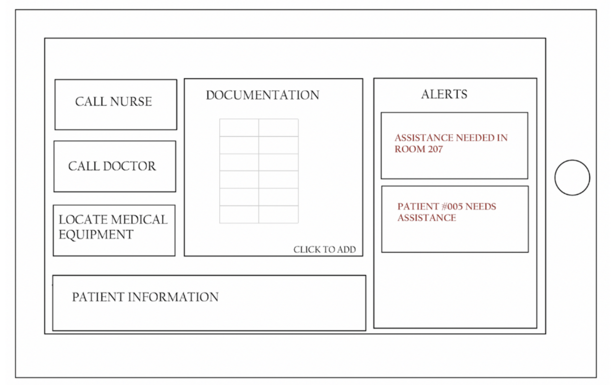
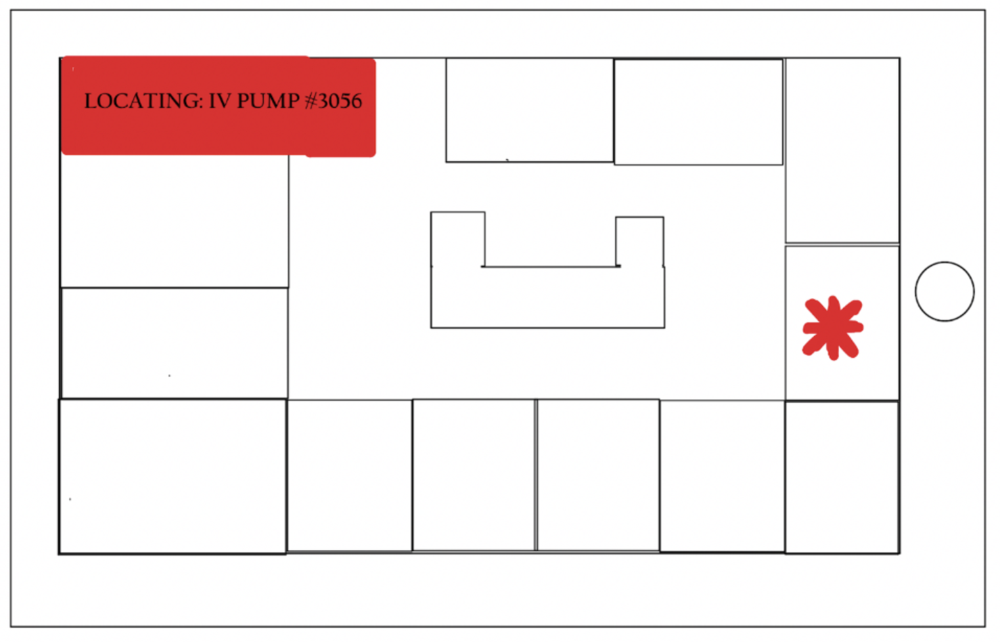
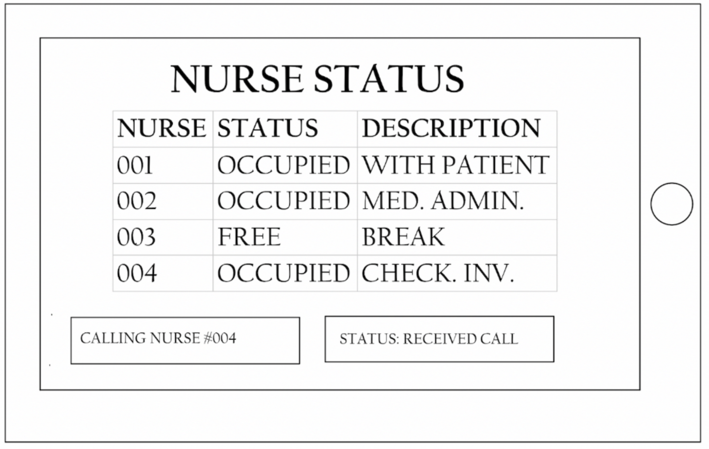
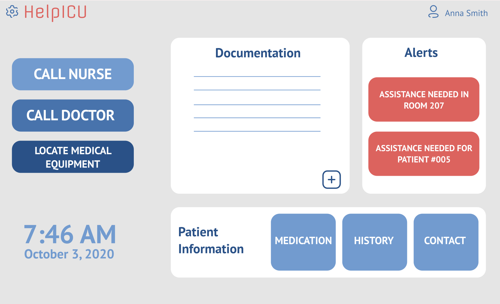
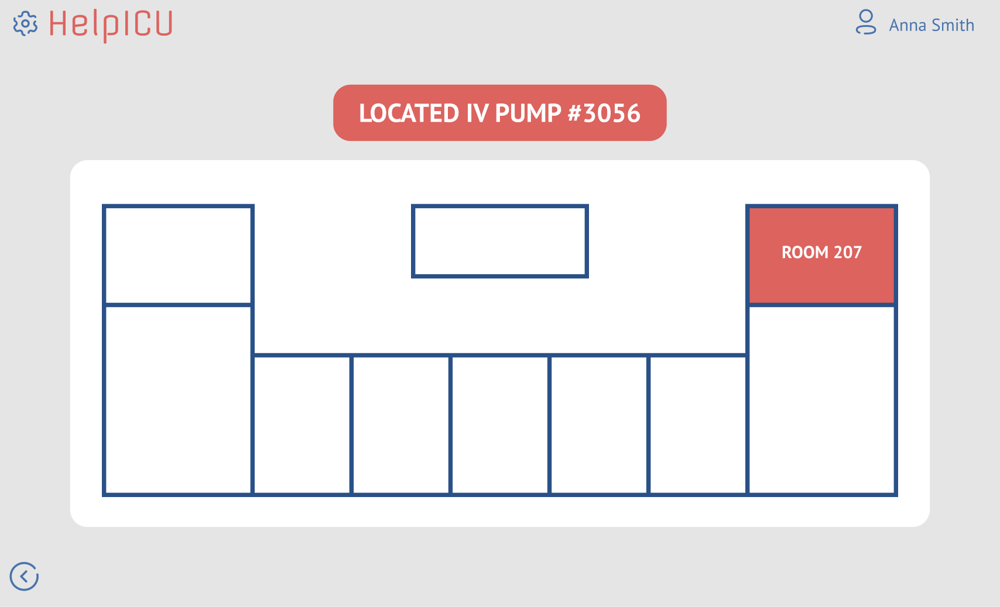
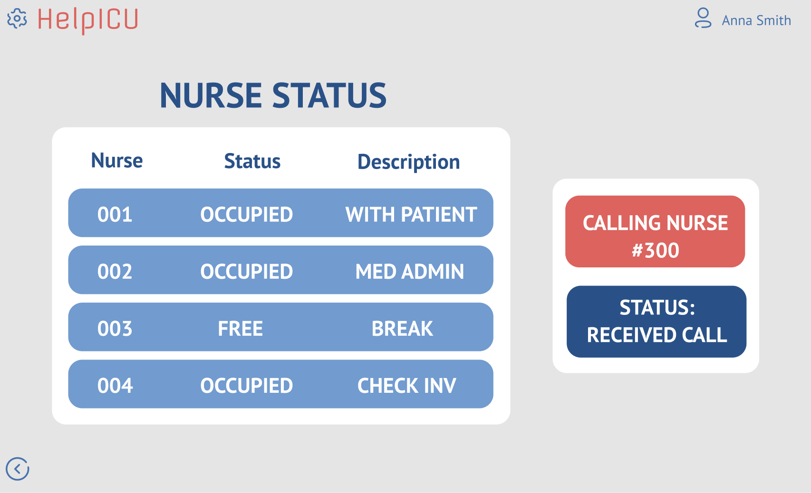

This case study outlines the design process taken to create the interface for an app that reduces the disorganization experienced by nurses in the ICU. This project was completed with a design team at the University of Waterloo.
Disorganization is an occurrence that is often experienced within the ICU, and it can lead to medical errors made by nurses. The disorganization that is most often experienced is in the misplacement of tools and equipment. Therefore, this is a problem that needs to be addressed.
The primary users of the app are nurses within the ICU in Canada. Other secondary users may be doctors, technology support personnel, or the administration team within the ICU.
For this project, I was responsible for creating the wireframe prototype of the app's interface, along with another member on the design team. I also designed the Figma prototype, which was developed after the wireframe.
To scope out the project, a failure modes and effects criticality analysis (FMECA) was conducted, which assesses the frequency and severity of accidents that take place. A FMECA was used in this design space, at it allowed for the definition of user requirements of the solution. To complete the FMECA, two user interviews were organized with nurses from a Canadian ICU. The outcome of the FMECA was that the most severe events leading to accidents within the ICU were interruptions, missed tasks due to preoccupation, the administration of an incorrect medication dosage, and misplacement of equipment. Therefore, it was decided that these areas would be focused upon in the designed solution.
To begin the design of the wireframe, the first screen of the app was created. Since the edges of a screen are the easiest for a user to navigate, the three main functions that a nurse would need to access are along the left panel: Call Nurse, Call Doctor, and Locate Medical Equipment. Along the right side panel are alerts, which occurs when another nurse pages the nurse with the iPad for assistance. The colour red was chosen for this font, as red catches the eye of the user. A sections for documentation and patient information was provided to ensure that incorrect medication dosage errors were combatted.
Next, the second screen was designed, which appears when the "Locate Medical Equipment" button is pressed. Here, the screen shows the layout of the ICU floor, a box appears for the nurse to type in which medical equipment they are looking for, and a red star appears to show which room the equipment is located in.
Lastly, the third screen was created. This screen appears when the "Call Nurse" button is pressed, and a lists of the nurse number, followed by their status, and a description of what they are doing to appear. This allows for the user to be up to date with what the nurses are doing, and the system pages the nurse with the least cognitively demanding job to assist the nurse needing assistance.
Once the wireframe was created, a user interface was prototyped within Figma. This was completed to better understand what the final product could look like, and what areas that should be improved. The three screens can be seen below.
  For the design of these screens, a very clean and minimal overall look was desired, to reduce chance of the interface increasing the cognitive load of the nurses. It was decided that only alerts and notifications of high attention were displayed in red, and the rest would be a less attention-grabbing colour.
This project served as an introductory understanding to the elements of user interface design, such as locations of easiest access for a user, and colours that catch a user's eye. Going forward, it would be beneficial to take the prototype a step further and test the usability, specifically the navigation and ease of use. The ideal test subjects would be nurses, who could give important feedback of what they do and don't like about the interface design. With this feedback, another design iteration could be performed.
created with
Website Builder Software .